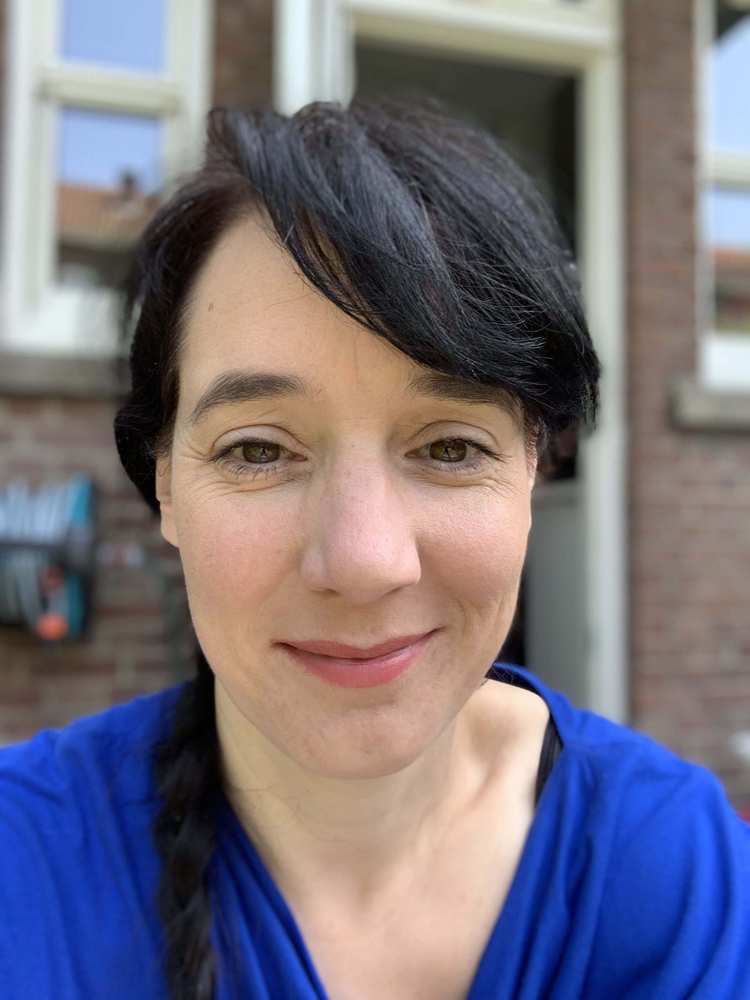

Mijn naam is Saskia en ik woon in de regio Rotterdam waar ik ook werkzaam ben bij een middelgroot software bedrijf.
Wij maken vooral medische software en zijn daarvoor ISO gecertificeerd.
Wat mij aanspreekt in progameren is wat mij ook altijd heeft aangesproken in de architectuur:
Je moet je voortdurend realiseren dat wat je aan het bouwen en aanpassen bent gevolgen kan hebben op een andere plek in je programma.
Je bent voordurend aan het puzzelen en vaak moet je creatief zijn in je oplossingen.
In mijn vrije tijd maak ik graag zelf kleren of ik ben aan het klussen aan mijn huis.
In mijn vakanties kan je me vinden op Terschelling. Een heerlijk eiland om weer helemaal tot rust te komen.
terug naar hoe word ik front-end developer